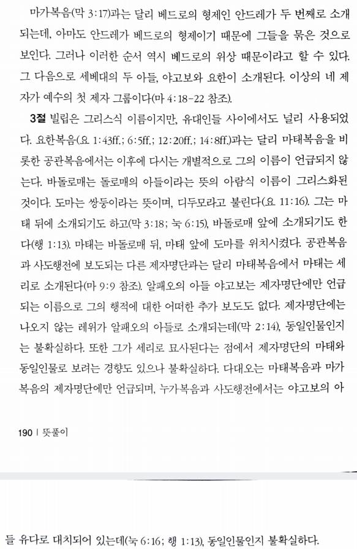

1예수께서 그의 열두 제자를 부르사 더러운 귀신을 쫓아내며 모든 병과 모든 약한 것을 고치는 권능을 주시니라
2열두 사도의 이름은 이러하니 베드로라 하는 시몬을 비롯하여 그의 형제 안드레와 세베대의 아들 야고보와 그의 형제 요한,
3빌립과 바돌로매, 도마와 세리 마태, 알패오의 아들 야고보와 다대오,
4가나나인 시몬 및 가룟 유다 곧 예수를 판 자라
5예수께서 이 열둘을 내보내시며 명하여 이르시되 이방인의 길로도 가지 말고 사마리아인의 고을에도 들어가지 말고
이방인의 길=사마리아인의 고을=이방선교금지(당분간), 하지만 실제로 예수님도 이미 이방인 선교를 행하심, 따라서 금지 보다는 유대(이스라엘) 우선이(당분간) 더 적절
6오히려 이스라엘 집의 잃어버린 양에게로 가라
7가면서 전파하여 말하되 천국이 가까이 왔다 하고
8병든 자를 고치며 죽은 자를 살리며 나병환자를 깨끗하게 하며 귀신을 쫓아내되 너희가 거저 받았으니 거저 주라
9너희 전대에 금이나 은이나 동을 가지지 말고
10여행을 위하여 배낭이나 두 벌 옷이나 신이나 지팡이를 가지지 말라 이는 일꾼이 자기의 먹을 것 받는 것이 마땅함이라
11어떤 성이나 마을에 들어가든지 그 중에 합당한 자를 찾아내어 너희가 떠나기까지 거기서 머물라
12또 그 집에 들어가면서 평안하기를 빌라
13그 집이 이에 합당하면 너희 빈 평안이 거기 임할 것이요 만일 합당하지 아니하면 그 평안이 너희에게 돌아올 것이니라
원문에 빈이라는 단어 없음
14누구든지 너희를 영접하지도 아니하고 너희 말을 듣지도 아니하거든 그 집이나 성에서 나가 너희 발의 먼지를 떨어 버리라
발의 먼지를 떨어 버리라=서로 상관 없는 사이
15내가 진실로 너희에게 이르노니 심판 날에 소돔과 고모라 땅이 그 성보다 견디기 쉬우리라
16보라 내가 너희를 보냄이 양을 이리 가운데로 보냄과 같도다 그러므로 너희는 뱀 같이 지혜롭고 비둘기 같이 순결하라
이리=유대인들의 종교 지도자들
17사람들을 삼가라 그들이 너희를 공회에 넘겨 주겠고 그들의 회당에서 채찍질하리라
18또 너희가 나로 말미암아 총독들과 임금들 앞에 끌려 가리니 이는 그들과 이방인들에게 증거가 되게 하려 하심이라
19너희를 넘겨 줄 때에 어떻게 또는 무엇을 말할까 염려하지 말라 그 때에 너희에게 할 말을 주시리니
20말하는 이는 너희가 아니라 너희 속에서 말씀하시는 이 곧 너희 아버지의 성령이시니라
21장차 형제가 형제를, 아버지가 자식을 죽는 데에 내주며 자식들이 부모를 대적하여 죽게 하리라
22또 너희가 내 이름으로 말미암아 모든 사람에게 미움을 받을 것이나 끝까지 견디는 자는 구원을 얻으리라
23이 동네에서 너희를 박해하거든 저 동네로 피하라 내가 진실로 너희에게 이르노니 이스라엘의 모든 동네를 다 다니지 못하여서 인자가 오리라
인자 오심의 4가지 가능성=1.부활 2.오순절성령 3.70년성전파괴때심판 4.말세의 재림
24제자가 그 선생보다, 또는 종이 그 상전보다 높지 못하나니
25제자가 그 선생 같고 종이 그 상전 같으면 족하도다 집 주인을 바알세불이라 하였거든 하물며 그 집 사람들이랴
바알세불=예수, 집 사람들=제자들
26그런즉 그들을 두려워하지 말라 감추인 것이 드러나지 않을 것이 없고 숨은 것이 알려지지 않을 것이 없느니라
27내가 너희에게 어두운 데서 이르는 것을 광명한 데서 말하며 너희가 귓속말로 듣는 것을 집 위에서 전파하라
그동안 비밀이었지만 이제는 온 세상에 전파할 때 (예수님은 단지 기적을 위해 다가오는 무리를 모으기 원치 않으셨으므로 베푸신 기적에 대해 당분간 비밀로)
28몸은 죽여도 영혼은 능히 죽이지 못하는 자들을 두려워하지 말고 오직 몸과 영혼을 능히 지옥에 멸하실 수 있는 이를 두려워하라
29참새 두 마리가 한 앗사리온에 팔리지 않느냐 그러나 너희 아버지께서 허락하지 아니하시면 그 하나도 땅에 떨어지지 아니하리라
30너희에게는 머리털까지 다 세신 바 되었나니
31두려워하지 말라 너희는 많은 참새보다 귀하니라
32누구든지 사람 앞에서 나를 시인하면 나도 하늘에 계신 내 아버지 앞에서 그를 시인할 것이요
33누구든지 사람 앞에서 나를 부인하면 나도 하늘에 계신 내 아버지 앞에서 그를 부인하리라
34내가 세상에 화평을 주러 온 줄로 생각하지 말라 화평이 아니요 검을 주러 왔노라
검=믿는 자와 믿지 않는 자의 분리
35내가 온 것은 사람이 그 아버지와, 딸이 어머니와, 며느리가 시어머니와 불화하게 하려 함이니
36사람의 원수가 자기 집안 식구리라
37아버지나 어머니를 나보다 더 사랑하는 자는 내게 합당하지 아니하고 아들이나 딸을 나보다 더 사랑하는 자도 내게 합당하지 아니하며
38또 자기 십자가를 지고 나를 따르지 않는 자도 내게 합당하지 아니하니라
39자기 목숨을 얻는 자는 잃을 것이요 나를 위하여 자기 목숨을 잃는 자는 얻으리라
40너희를 영접하는 자는 나를 영접하는 것이요 나를 영접하는 자는 나를 보내신 이를 영접하는 것이니라
41선지자의 이름으로 선지자를 영접하는 자는 선지자의 상을 받을 것이요 의인의 이름으로 의인을 영접하는 자는 의인의 상을 받을 것이요
42또 누구든지 제자의 이름으로 이 작은 자 중 하나에게 냉수 한 그릇이라도 주는 자는 내가 진실로 너희에게 이르노니 그 사람이 결단코 상을 잃지 아니하리라 하시니라인
